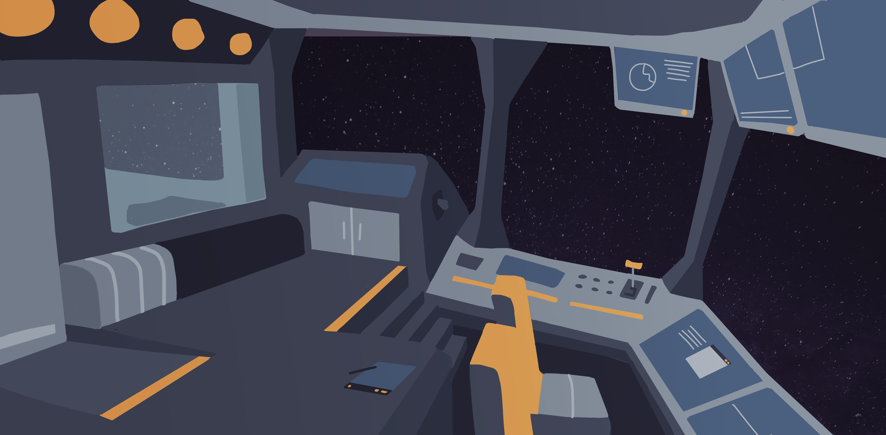
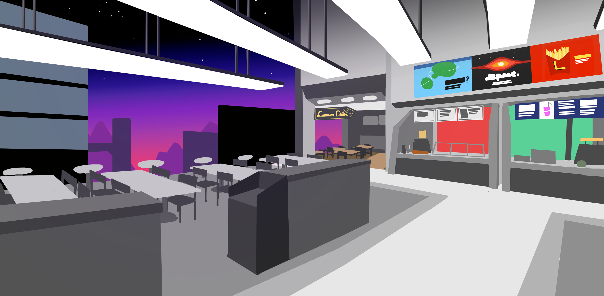
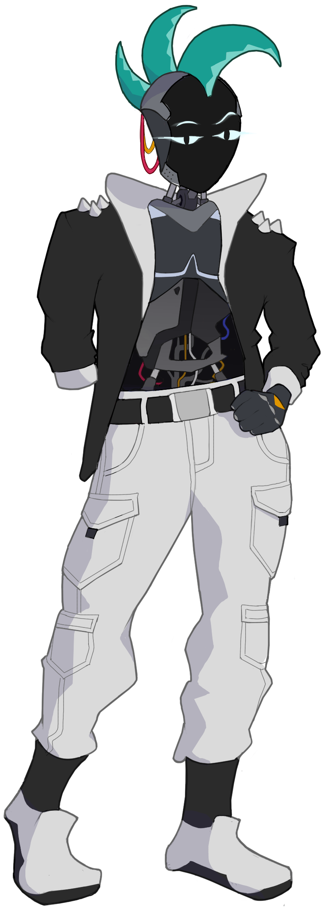
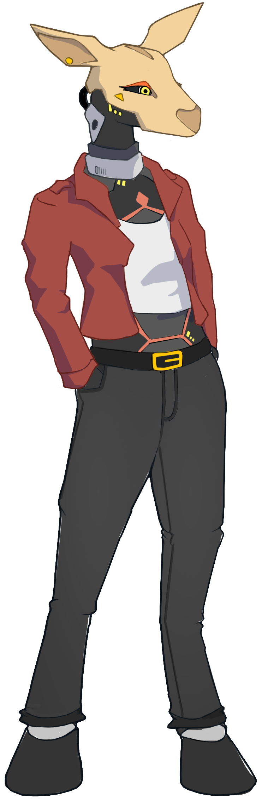
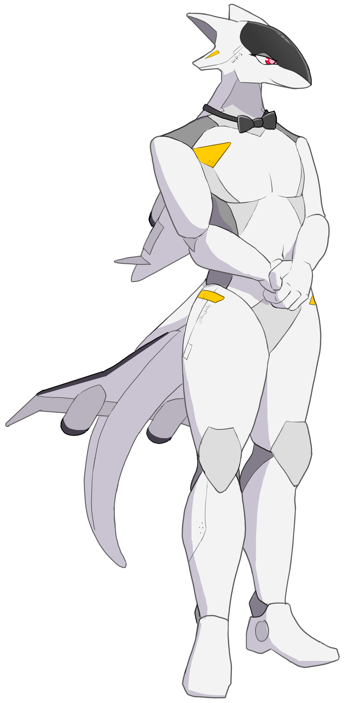
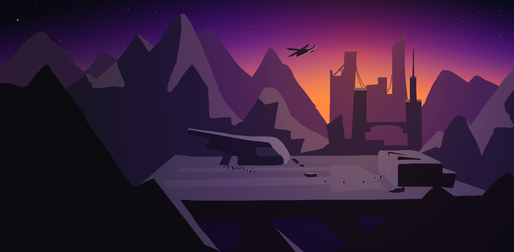

Congratulations! This is the end of the ARG and the official announcement of my upcoming game: Evenfall, a point-and-click visual novel about befriending robots in a dying city.
If you solved the ARG, leave a message in the guestbook to record your accomplishment!
Evenfall will be announced publically on [DATE TBD]. Until then...

Evenfall is known as the city of eternal sunset—an ex-mining colony on a remote planet where the sun hangs motionless just below the horizon. Months ago, all of its outgoing communication went dark.
Intrepid technician Indigo, who has always preferred the company of machines over their fellow humans, is sent to diagnose the issue. The first thing they discover? Evenfall is teeming with robots. Indigo quickly hits it off with the locals, from charming servants to mysterious lowlifes.
But between cost-cutting megacorps and rusty skywalks, Evenfall is on the brink of collapse. As Indigo digs into the city's secrets, they uncover a conspiracy that might finally spell an end to the twilit metropolis—with Indigo caught in the middle of it.

Meet the bots carving out a life at the far end of the galaxy...

If you run across this charming loner in a bar, be careful of his silver tongue—he's just as likely to swipe your chits as he is to take you home.
As one of the last employees in Evenfall's gutted Department of Information, Em knows to keep their head down. But when the streetlights turn off, she dreams of chronicling the city's complex history.


Abandoned by his multibillionaire owner, Shonkhor is in search of a new directive to follow. But can he find someone to fill the human-shaped hole in his heart?

Stay tuned for more info...
